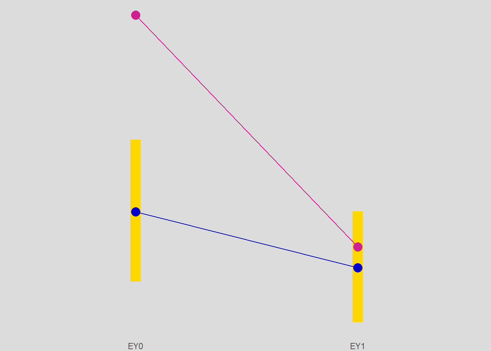

Chapter 6 Backdoor Method via Standardization
library(tidyr)
library(dplyr)
library(dagitty)
library(ggplot2)
library(ggdag)
library(gt)6.1 Standardization via Outome Modeling
Standardization vis via outcome modelingis one way to estimate \(E(Y(t))\)
\[ \begin{align*} &\text{by double expectation theorem} \\ E(Y(t)) &= E_H E(Y(t) \mid H) \\ &\text{by independence of T given H, (6.1)} \\ &= E_HE(Y(t) \mid T=t, H) \\ &\text{by consistency assumption} \\ &= E_HE(Y \mid T=t, H) \end{align*} \]
and with a binary dataset we can write
\[ \begin{align*} E_H E(Y \mid T=t, H) = E(Y \mid T=t, H = 0) P(H = 0) + E(Y \mid T=t, H = 1) P(H = 1) \end{align*} \]
We use R to compute the standardized estimates with the following script
#' Compute standardized estimates
#'
#' Compute standardized estimates.
#'
#' The standardized estimates are computed using the outcome model.
#' IMPORTANT: The formula must be in the format \code{Y ~ T + H + T*H}.
#'
#' @param dat Dataframe of raw data.
#' @param formula Formula in format \code{Y ~ T + H + T*H}
#' @R Number of bootstrap replicates.
#' @conf Confidence interval
#'
#' @return Dataframe of estimates
bootstand <- function(dat, formula = Y ~ `T` + H + `T`*H, R = 1000, conf = 0.95) {
# the name of the intercept variable used by lm
x0 <- "(Intercept)"
# the name of the response variable
y <- all.vars(formula[[2]])
# name of the treatment variable
t <- all.vars(formula[[3]])[1]
# name of the condition variable
h <- all.vars(formula[[3]])[2]
# name of interaction
th <- paste(t, h, sep = ":")
estimator <- function(data, ids) {
dat <- data[ids, ]
# marginal expected value of H
EH <- mean(dat[, h])
# fit the outcome model and extract the coefficients
coefs <- coef(lm(formula = formula , data = dat))
# compute the marginal expected potential outcomes
EY0 <- coefs[x0] + coefs[h] * EH
EY1 <- coefs[x0] + coefs[t] + coefs[h] * EH + coefs[th] * EH
# return the effect measures
rd <- EY1 - EY0
logrr <- log(EY1 / EY0)
out <- c(EY0, EY1, rd, logrr)
names(out) <- c("EY0", "EY1", "rd", "logrr")
out
}
out <- run_boot(data = dat, statistic = estimator, R = R, conf = conf)
# exponentiate the log values
out <- exp_effects(data = out, vars = c("rr" = "logrr"))
out
}Example: What-if? Study
and for the What-If? study this gives
whatif.out <- bootstand(whatifdat, formula = Y ~ A + H + A*H)and we compare with the author’s
comp <- data.frame(
name = c("EY0", "EY1", "RD", "RR"),
auth = c(0.375, 0.289, -0.086, 0.77),
est = whatif.out$est
)
stopifnot(sum(abs(comp$auth - comp$est)) < 0.01)and the results are presented in table 6.1
t <- gt_measures(whatif.out,
title = "Table 6.1",
subtitle = "What-If Study: Standardized Estimates")
t| Table 6.1 | ||
|---|---|---|
| What-If Study: Standardized Estimates | ||
| Measure | Estimate | CI1 |
| EY0 | 0.375 | (0.268, 0.487) |
| EY1 | 0.289 | (0.205, 0.376) |
| rd | -0.086 | (-0.209, 0.036) |
| rr | 0.770 | (0.529, 1.123) |
| Fundamentals of Causal Inference, Babette A. Brumback, 2022 | ||
|
1
95% confidence interval
|
||
# a_file <- tempfile(fileext = ".png")
# gtsave(t, a_file)
# tpng <- png::readPNG(a_file, native = TRUE)df_lines <-
data.frame(x = "EY0", xend = "EY1",
y = whatif.out[whatif.out$name == "EY0", "est"],
yend = whatif.out[whatif.out$name == "EY1", "est"])
df_points_Y <- data.frame(x = c("EY0", "EY1"),
label = c("Y0", "Y1"),
y = c(1 - mean(whatifdat$Y), mean(whatifdat$Y)))
df_lines_Y <-
data.frame(x = "EY0", xend = "EY1",
y = df_points_Y[df_points_Y$x == "EY0", "y"],
yend = df_points_Y[df_points_Y$x == "EY1", "y"])
p <- whatif.out %>%
filter(name %in% c("EY0", "EY1")) %>%
ggplot(mapping = aes(x = as.factor(name), y = est, ymin = lci, ymax = uci)) +
geom_linerange(size = 5, color = "gold") +
geom_point(shape = 19, size = 4, color = "mediumblue") +
geom_segment(df_lines, mapping = aes(x = x, xend = xend, y = y, yend = yend),
inherit.aes = FALSE, color = "mediumblue") +
geom_point(df_points_Y, mapping = aes(x = x, y = y), inherit.aes = FALSE,
shape = 19, size = 4, color = "violetred") +
geom_segment(df_lines_Y, mapping = aes(x = x, xend = xend, y = y, yend = yend),
inherit.aes = FALSE, color = "violetred") +
theme_minimal() +
theme(title = element_text(color = "midnightblue"),
axis.title = element_blank(),
axis.text.y = element_blank(),
panel.grid.major = element_blank(),
panel.grid.minor = element_blank(),
plot.background = element_rect(fill = "gainsboro", color = "gainsboro"),
plot.margin = unit(c(0, 0, 0, 0), "char"))
p
where we observe a reduction of the viral load but the difference is not statistically significant.
Example: Double What-if? Study
dataDoubleWhatIf <- doublewhatifsim()doublewhatif.out <- bootstand(dataDoubleWhatIf, formula = VL1 ~ A + AD0 + A*AD0)gt_measures(doublewhatif.out,
title = "Table 6.2",
subtitle = "What-If Study: Standardized Estimates")| Table 6.2 | ||
|---|---|---|
| What-If Study: Standardized Estimates | ||
| Measure | Estimate | CI1 |
| EY0 | 0.669 | (0.636, 0.702) |
| EY1 | 0.335 | (0.272, 0.402) |
| rd | -0.334 | (-0.402, -0.262) |
| rr | 0.500 | (0.414, 0.619) |
| Fundamentals of Causal Inference, Babette A. Brumback, 2022 | ||
|
1
95% confidence interval
|
||
For comparisons, we repeat the standardization with \(H = VL_0\)
doublewhatif.out <- bootstand(dataDoubleWhatIf, formula = VL1 ~ A + VL0 + A*VL0)gt_measures(doublewhatif.out,
title = "Table 6.3",
subtitle = "What-If Study: Standardized Estimates")| Table 6.3 | ||
|---|---|---|
| What-If Study: Standardized Estimates | ||
| Measure | Estimate | CI1 |
| EY0 | 0.696 | (0.662, 0.729) |
| EY1 | 0.245 | (0.19, 0.3) |
| rd | -0.450 | (-0.516, -0.384) |
| rr | 0.353 | (0.28, 0.448) |
| Fundamentals of Causal Inference, Babette A. Brumback, 2022 | ||
|
1
95% confidence interval
|
||